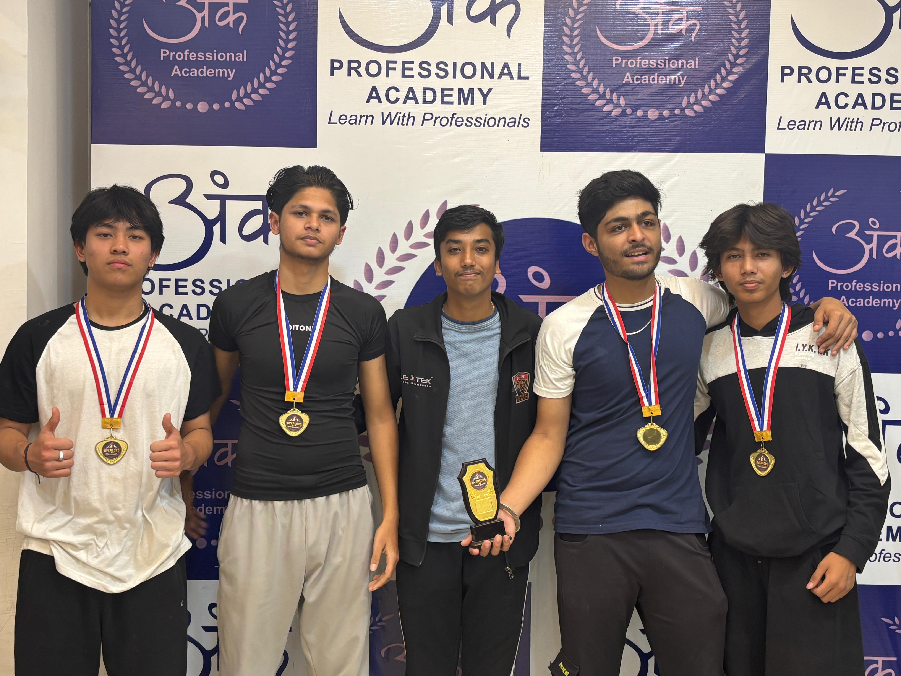
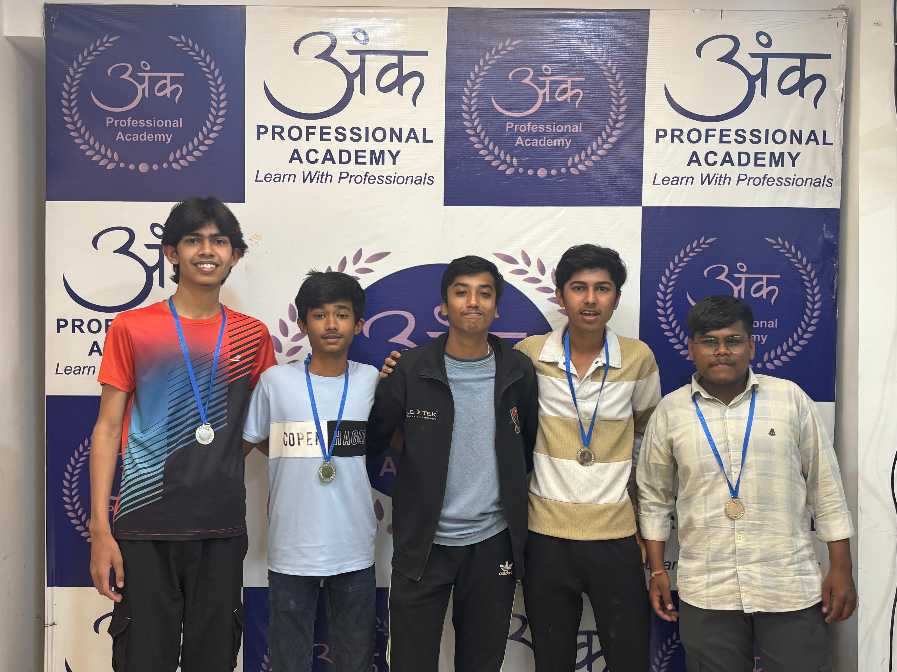
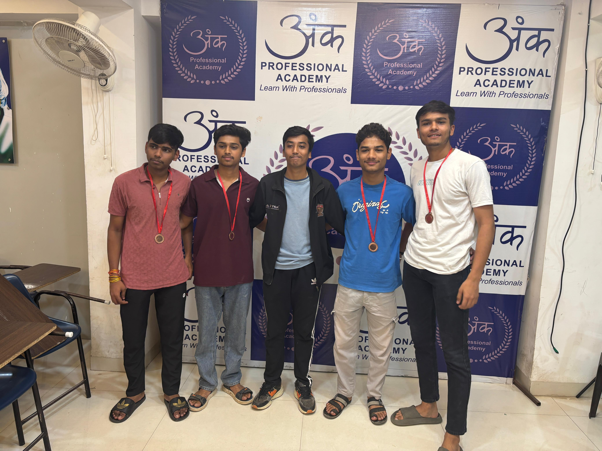

Status: COMPLETED ✅
LAN Event Location: ANK Professional Academy, Tilak Nagar
Date: 1 March 2026 - 11:00 AM

Team Havocs dominated the championship with exceptional strategy, flawless coordination, and aggressive gameplay. Their consistency throughout the tournament secured them the title in spectacular fashion.

Nexfury E-Sports displayed outstanding teamwork and tactical brilliance. Their strong rotations and disciplined gameplay pushed them to a well-earned second-place finish.

KBN Force proved their resilience with powerful comeback performances. Their determination and clutch moments made them one of the most exciting teams of the tournament.